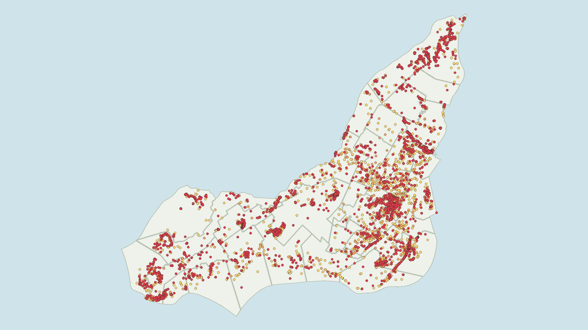

Filters
Species, risk level, borough or city, year, location accuracy and photos.
Where invasive plant species have been recorded on the island, and how Québec rates their risk.

Open the mapInvasive plants are spreading through Montréal's green spaces. Some are established across the island, while others are only starting to appear. This map shows where each species has been recorded, using iNaturalist and Québec Sentinelle observations, along with the risk level assigned by Québec's Ministère de l'Environnement.
Species, risk level, borough or city, year, location accuracy and photos.
Points colored by risk, a density view, or the number of species recorded in each borough. Nearby points can be grouped into clusters.
Click a borough or city to see its observation and project counts and species by risk level.
Charts of records by year or by month. Click a year to filter the map.
Control projects run by the city, boroughs and local organizations, with links to their sources.
Photos, Québec status and taxonomy for each species.
Québec classifies invasive plants by their known risk to biodiversity and the environment.
A major threat to biodiversity and to how ecosystems function.
May harm some native species or ecosystems, without severe impacts.
Limited impact on biodiversity and ecosystems.
Impacts in Québec are not yet well enough understood to rate.
Québec also lists 26 priority species for control. Priority considers other factors, such as human health, so a priority species can still be moderate or low risk. See Québec's risk criteria and priority species.
Research-grade observations by iNaturalist contributors, updated daily. Usernames, photo credits and licenses are shown in each popup.
Invasive species records from the MELCCFP (Québec), filtered to the Montréal region. CC-BY 4.0.
MELCCFP (Québec). Used for risk levels, Québec status and priority species.
Administrative boundaries, invasive plant control projects, protected natural areas and parks. CC-BY 4.0.
Sentinelle, the Québec list, the Montréal datasets and project sources were last checked in October 2026. Photos are only shown when their license allows reuse; observation descriptions are not reproduced.